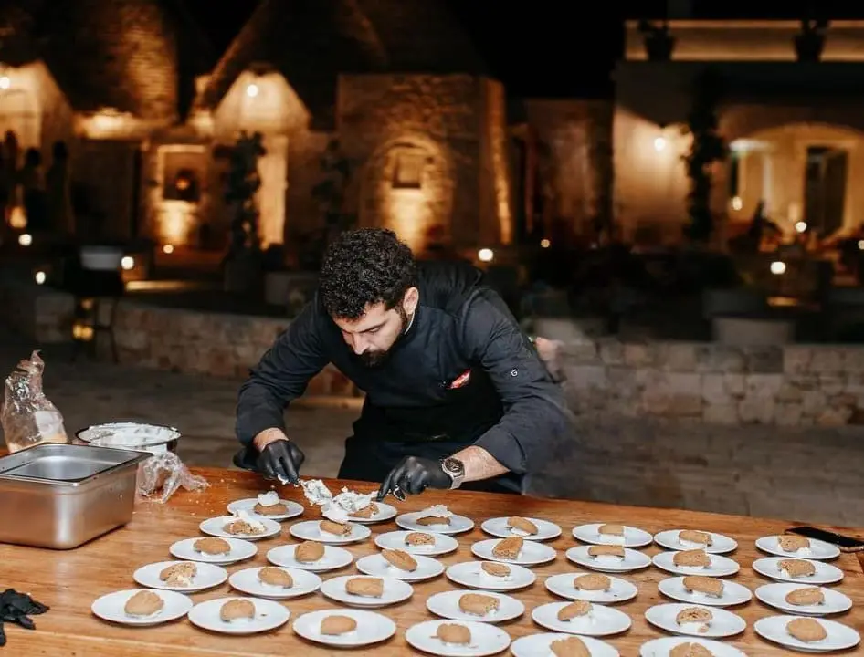
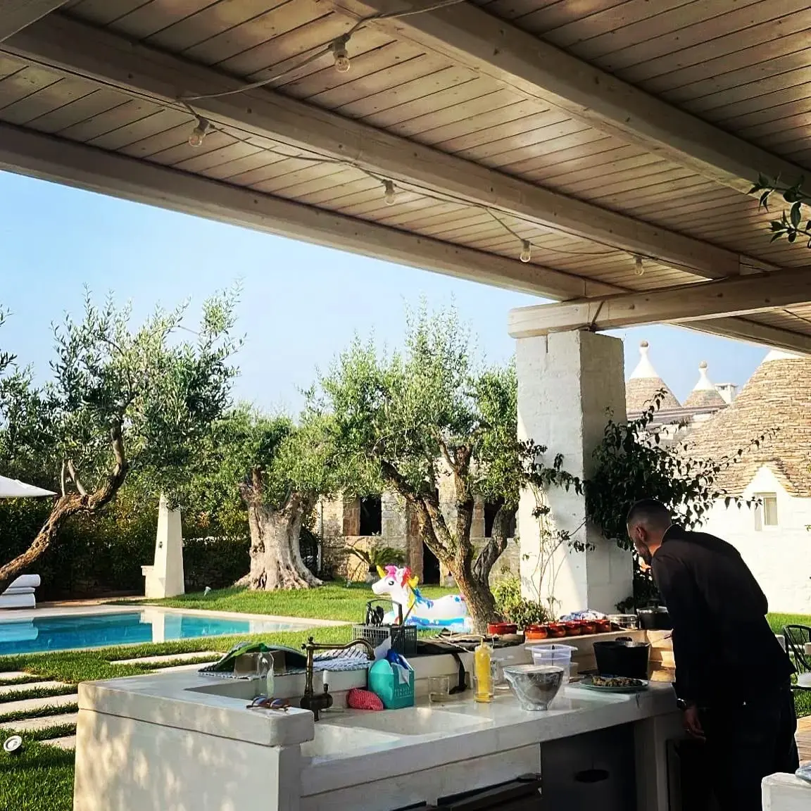
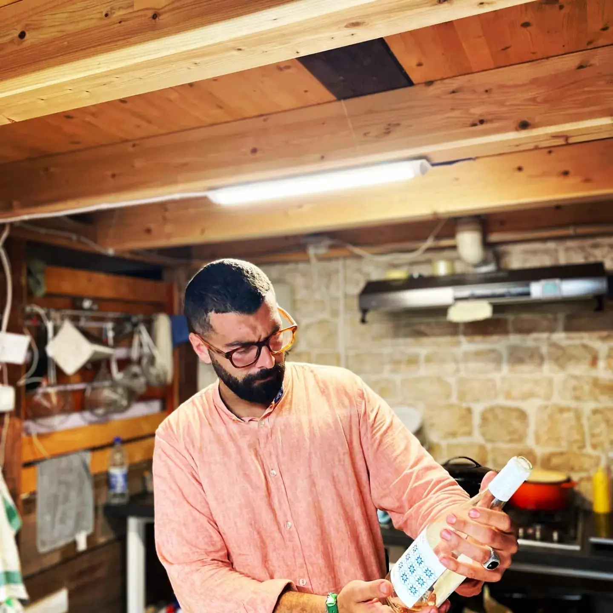

Welcome to Chef Claudio’s Table!
Immerse yourself in the true flavors of Puglia with bespoke culinary experiences. Using fresh, locally-sourced ingredients, we bring the essence of Puglian tradition directly to your table, ensuring every meal is an unforgettable occasion.
Chef Claudio offers an authentic Puglian dining experience where tradition, culture, and local ingredients come together to honor the cuisine of this beautiful region. Born and raised in Puglia, Chef Claudio’s passion for fresh, natural food is deeply rooted in his heritage, and he is eager to share his knowledge with each guest.
Whether you’re on vacation or simply want to relax, Chef Claudio provides an exclusive personal chef service for private dinners or special events. You can also join interactive cooking classes, where you’ll learn to prepare traditional dishes you can recreate time and time again.
Our Purpose
At Puglia Flavors, our mission is to deliver a genuine Puglian culinary experience right to your doorstep. We are passionate about introducing the distinctive tastes and rich traditions of Puglian cuisine to guests from around the globe.
With a team of dedicated and skilled chefs, we create dishes that tell the story of our land, transforming each meal into a meaningful experience. Puglia Flavors is devoted to showcasing the richness of Puglian cuisine through tailored in-home chef services.
We strive to surpass expectations with every dish, offering a refined culinary journey that reflects the true heart of our region’s gastronomy. Our dedication ensures that every dinner becomes an exploration of Puglia’s most treasured flavors.
Meet Chef Claudio
Chef Claudio Cisternino, a master of Puglian cuisine, established Puglia Flavors with the goal of bringing the region’s authentic flavors to the homes of food enthusiasts.
With extensive experience in the culinary arts, Chef Claudio specializes in providing a unique private chef service, crafting dishes that highlight the deep-rooted traditions of Puglian cooking.
His passion for sharing Puglian cuisine with the world is at the core of his project, offering personalized dining experiences that turn every meal into an exploration of flavor and tradition.
